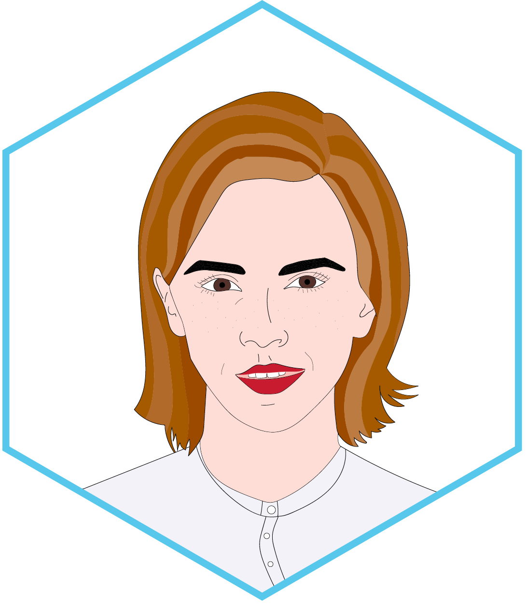
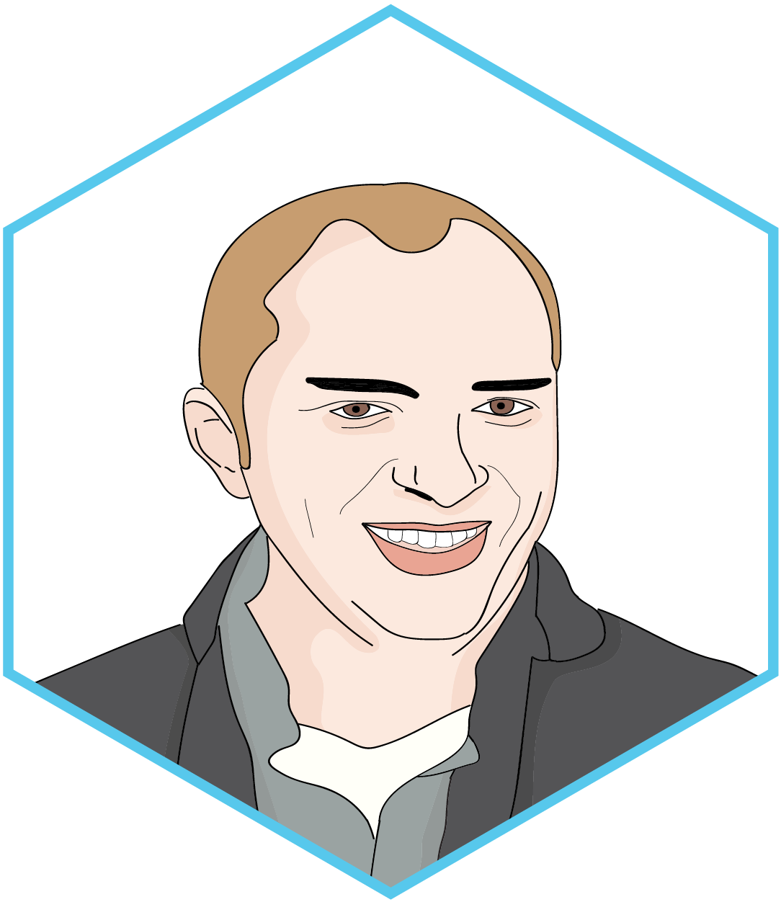
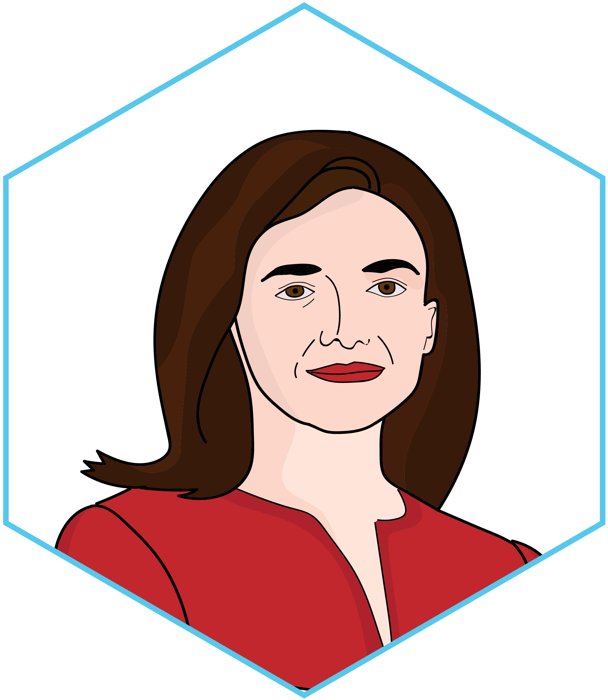
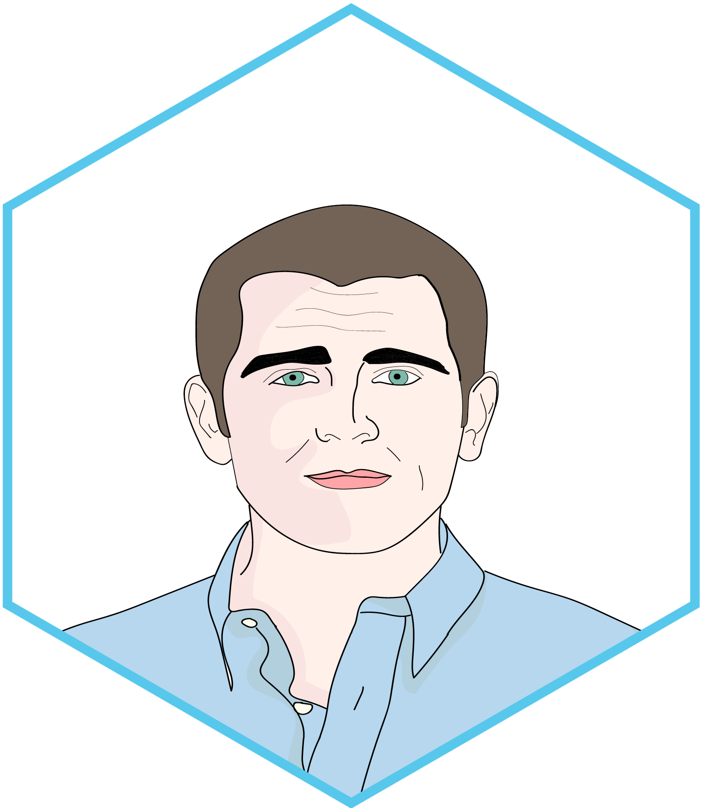

Social technology is a social good. It facilitates empathy and mutual understanding, which in turn leads to a more tolerant and peaceful world. Our recent initiatives toward total connectivity have upheld this goal, and today over 90 percent of the world has access to Facebook via Orbit, our fleet of drones that beam down free internet from the sky.
Facebook is what we all have in common. Facebook users are now the single largest category of humans on Earth, which underscores just how much we thrive in an open and inclusive community. We work tirelessly to make sure that there is a place for everyone in the world we are building together. We are well on our way to accomplishing our biggest goal yet: 8 billion active users.
The Virus Model
We will pave this road together. Much like a virus spreads through direct contact with an active agent, our growth model relies on this conception to achieve our goal. Recruitment requires trust: not just trust in the message, but trust in the messenger.
Each and every one of us is a nexus: a link to another potential member of our community. Social engagement using the Synthesis browser is the best way to ensure your world is safe and secure; it also contains encrypted tools to help identify potential loci of receptive Facebook membership. This symbiosis will be the foundation for a new era of total connectivity.
The Next Generation
The world can always be brought closer together. Even once everyone on earth has an internet connection or a Facebook account, we will still need stronger connection. Inspired by our Founder Mark's own success story, we know that the development of coding skills in our youth can lead to an extremely fruitful future (don't forget, Mark's first job after only two years of college was CEO of Facebook!). That's why we have taken it upon ourselves to establish Facebook Academies, alternative high schools for teens with relevant coding experience and a passion for bettering our community. Facebook Academies exist to keep alive the dream of creating an open and connected global community.
Sheryl Sandberg's tireless commitment to empowering women has led to the creation of Facebook Academy's sister school, the Sandberg Academy for Ambitious Girls, a requisite component for all our female students providing invaluable supplementary training. The Academy will equip girls with the wisdom that Sheryl acquired over the course of her trailblazing career. Courses include Beyond the Pantsuit, Diplomacy in Sexual Rejection, 21st Century Approaches to Sitting, Leaning In: 21st Century and Beyond, and Decorous Drinking. Our girls come away from the Academy knowing that the only thing that can keep them from the head of the conference table is self-doubt.
Upon graduation, students are offered contracts for a job at Facebook that reflect their aptitudes and passions. International students will often return to their home country to spearhead initiatives that integrate isolated regions into our global community. Graduates are the torchbearers of our community, working to shrink the earth to the size of a monitor.
How to Join the Fleet: Because accessibility and efficiency are our business, anyone with a computer can apply to Facebook Academy via a streamlined application process on Facebook. Through their profiles, prospective students will complete a series of application assessments including a community building trial on Farmville, a pet facial analysis quiz, and a content reporting simulation. In place of the personal essay, each applicant is asked to create a Facebook Live video at an event or location that encompasses their passion. There are no language requirements but applicants must have a demonstrable history of Facebook use.
The Faces of Facebook
Peter Thiel
Board Member
Peter Thiel has served on the board of Facebook since 2011, but is an important part of our history since 2004, when he donated $500,000 to help get the company off the ground. Peter is best known for co-founding PayPal and the CIA-backed big-data startup Palentir, and for his eccentric interests and polemical nature. Peter is a vocal advocate for the causes he believes in, and co-authored The Diversity Myth: Multicultrualism and Political Intolerance on Campus in which he "shows that multiculturalism is not about learning more; it is actually about learning less." Sometimes Peter's daring can get him into trouble, as was the case when he wrote in his book that some cases of alleged date rape were actually "seductions that are later regretted." Peter has since adjusted this opinion and issued an apology, demonstrating his flexibility and integrity. Peter also works in the investment banking world, serving as President of Thiel Capital, as a Partner at Founders Fund, and as President of Clarium Capital Management. Peter brings necessary ideological diversity to our board, and has publicly pledged to double his 2016 campaign donation for President Trump's reelection bid. Peter also invests millions in startups that work on anti-aging medicine philanthropy, hoping to help find a cure for death—so if we're lucky, Facebook will have him around for a while. Meet Peter!
Interested in: evading death, nationalist education, funding other millionaires, media censorship, extralegal floating utopias, fascism, white people, colonization of Mars and meatspace, Hulk Hogan

Erskine B. Bowles
Board Member
Erskine B. Bowles heads up our Washington strategy as a well-known insider. Erskine is best known for his role as White House Chief of Staff under Bill Clinton, and as Chairman of Barack Obama's bipartisan National Commission on Fiscal Responsibility and Reform. Corporate truly comes first for Erskine and he currently sits on eight boards (including Morgan Stanley and General Motors), and is the co-chair of the campaign to "Fix the Debt, a debt-reduction campaign which aims to benefit corporations with tax code changes and save money through cuts to social safety net programs. Erskine lives in Charlotte, North Carolina with his wife and JPMorgan Chase & Co.'s board member Crandall Close Bowles. Meet Erskine!
Interested in: promoting fiscal responsibility, troubleshooting regulation inquiries, sparring with Thiel, resembling John Lithgow
Emma Watson
Board Member
Emma Watson joined Facebook's board in 2019. Emma is an actress best known for her iconic role playing Hermione Granger in the Harry Potter movie franchise. By the time the sixth movie came out, she was the highest paid actress in the industry. Since she lost this claim to fame, she has followed her passion for fashion, and was awarded Best British Style at the 2014 British Fashion Awards. That same busy year, she became a U.N. Women Goodwill Ambassador, and gave a speech on gender equality that effectively broke the internet. Her famous campaign, HeforShe, encourages men to also stand up for feminism, which is an inspiration for us here at Facebook. Emma is brainy like Hermione, and founded a Goodreads book club called "Our Shared Shelf," which promotes feminist books. Alongside a flourishing career, Emma still managed to complete her B.A. in English Literature from Brown University, also in 2014. Emma has been called the voice of a generation, making her point of view essential on our board. Meet Emma!
Interested in: male feminists, English lit, emulating Sheryl, Burberry, Lancôme, modeling, feminist book clubs, Disney, ancient runes

Susan D. Desmond-Hellmann
Board Member
Trim, energetic, and approachable, especially after her 4:45 A.M. morning run, Susan D. Desmond-Hellmann, M.D., M.P.H.—you can just call her Sue—is a physician, scientist, and philanthropist. Sue is the Chief Executive Officer at the Gates Foundation, and has spent more than 30 years driving healthcare initiatives that combat disease, poverty, and inequity. Sue is yet another pioneering woman who sits on our board, advocating for the empowerment of all women everywhere. In 2009, she was named University of California San Francisco's first female chancellor, where she saved the university $29.3 million by cutting 270 jobs. Her second feminist power play came when she became Facebook's second female board member in 2013. Meet Sue!
Mark Zuckerberg—known as Zuck around HQ—is the Founder of Facebook, and the honey that keeps the hive buzzing on the mission for total integration. Mark started tinkering with code as a kid and created a chat tool called ZuckNet for his father's dental practice. During his two years at Harvard, Mark developed a reputation as a programming whiz after launching Facemash (a voter-based platform comparing students by attractiveness) and was approached by some students to create the Ivy League dating site Harvard Connect. Mark quickly understood the immense potential of the platform and shed his early partners, forging ahead boldly to create the preeminent social network that connects people across the globe today.
Though Mark is now one of the youngest billionaires in the world, you might not know it. He is typically found donning a navy-blue hoodie or a gray tee, driving around the Bay Area in his Volkswagen GTI. Mark has two daughters with his wife and college sweetheart Priscilla Chan, and they split their time between their Palo Alto compound, a 750-acre estate on Kauai, and public tours of flyover country. The duo has pledged to give 99% of their Facebook shares to charity during their lifetime (specific timeline still to be determined). Meet Mark!
Interested in: hoodies, doing what it takes, changing his mind, meeting forgotten Americans, redefining the billionaire persona, eschewing luxury, offending investors, Illuminati
Jan Koum
Board Member
Jan Koum grew up without running water in Soviet-Era Ukraine and is now worth over $9.7 billion, demonstrating how Facebook really does change lives. He joined Facebook's board in 2014, when Facebook acquired his tremendously popular messaging app WhatsApp. Jan brings the valuable perspective of the immigrant to the board of Facebook. While studying at San Jose State University, Jan took a job with Ernst & Young, where he met his future WhatsApp business partner, Brian Acton. After landing a job at Yahoo, Jan dropped out of college and began his career as a developer. In 2007, Jan and Brian left Yahoo, spending a year in South America playing ultimate frisbee to decompress. Jan unsuccessfully applied to work at Facebook in 2010, but thanks to the success of WhatsApp, everything worked out in the end. Jan is skilled at apologies, with several documented reparations for a 1996 restraining order from an ex-girlfriend to prove it, so we're lucky to have Jan on board. Meet Jan!
Reed Hastings is a board member since 2011 and the founder of Netflix. Reed is admittedly bad at following orders, which is just fine since Facebook has values instead of rules. A true vanguard, Reed is no CEO with a fancy corner office—in fact, he has no office at all and tends to do most of his work from his smartphone, which allows him to travel at his leisure. He is an advocate of the "first principle" style of thinking, which says that everything you do should be driven by a foundational belief rather than blindly sticking to process. Before getting a Computer Science degree from Stanford and founding a tech startup, Reed had the formative experience of joining the Peace Corps, spending three years teaching math to students in Swaziland. His interest in education has endured, and Reed is the former president of the California State Board of Education and a major proponent of charter schools in favor of unelected boards. He has donated millions of dollars to various charter schools, in addition to funding education software to personalize learning. Reed is just another down-to-earth billionaire. Meet Reed!
Interested in: getting rid of urban school boards, software based learning, promoting ancient thinking principles, tall tales
Marc Andreessen
Board Member
Marc (not to be confused with Mark) Andreessen is an early Facebook investor and a board member since 2008. He is the outspoken Partner at the venture capital firm Andreessen Horowitz, which invests significantly in Facebook affiliates Instagram and Oculus VR. Andreessen earned his chops as the inventor of Netscape, the first graphical Web browser. Marc believes that all ideas can gain traction if said loudly and insistently enough. He once took to Twitter to dispense his musings, posting dozens of Tweets per day, but is now an exemplary board member in realizing Facebook's superiority over Twitter. Now Marc uses any available outlet to give his takes such as: "software is eating the world" (self-explanatory); the "Harry Potter world theory" (a the future where every object is alive); and "nerd nation" (the non-geographical nation of nerds). Marc feels nothing but optimism about technology's increasing integration into our lives. Looking forward is his thing, and he has no interest in dwelling aimlessly on the issues we face in the present. Meet Marc!
Interested in: flying cars, spreading optimistic views of Silicon Valley, promoting forward-thinking, non-geographical nation building

Sheryl Sandberg
Chief Operating Officer
Sheryl Sandberg, the Chief Operating Officer of Facebook, is the yin to Mark's yang. She provides practical oversight to the company's business operations and translates Mark's genius for our advertisers and investors. Sheryl came to Facebook with invaluable experience, having served as Chief of Staff to the Deputy Secretary of the U.S. Department of the Treasury during the Clinton administration, and later as Vice President of Google's Global Online Sales and Operations for seven years.
As our resident expert on what it means to be tokenized, Sheryl brings an important perspective to the table. Though she didn't always call herself a feminist, she now believes we need to reclaim the F Word if it means equal opportunity for men and women. Her corporate-feminist bestsellers Lean In: Women, Work, and the Will to Lead and Lean In for Graduates have inspired a generation of female professionals to strive for leadership positions and career fulfillment, and her ideas continue to gain traction at LeanIn.org and OptionB.org. This ethos trickles down at Facebook, inspiring the 36% of women who work here—up from 35% just 2 years ago!—each and every day. Like Mark, she stays humble, forgoing a personal office (though she does have a glass-walled personal conference room). At the end of the workday, Sheryl heads to her Menlo Park home at 5:30 PM on the dot to spend time with her family. Meet Sheryl!
Interested in: work leave, leaning in, TedTalks, posturing, 40 hour work week, sharing feelings at work

Dave Wehner
Chief Financial Officer
Dave serves as Chief Financial Officer at Facebook, overseeing the company's amplifying revenue. Dave is no stranger to byzantine corporate finance, having previously served as Zynga Inc.'s Chief Financial Officer and as Managing Director at Allen & Company, an investment bank focused on media and technology. In addition to his business savvy from the online games industry, he brings a uniquely scientific background to Facebook, with a B.S. in Chemistry from Georgetown University (where he was also an editor of The Hoya) and a M.S. in Applied Physics from Stanford University. When he's not buried in Facebook's financial affairs, Dave loves to bask in the outdoors, whether he's wine tasting in Napa or horseback riding in Yosemite. Meet Dave!
Interested in: staying under the radar, polo shirts, wine country, shooting under par, garlic bread, One-Eyed Jacks, turkey trotting
Chris Cox
Chief Product Officer
Known as Facebook's most likable executive, Chris Cox is the Chief Product Officer of the company, serving the role of Chief of Staff to Mark on product dev. Before becoming CPO, Chris served as the Director of Human Resources, where he set the tone for our company culture and articulated our former mission to "make the world more open and connected." Chris is an ESTP who plays in a reggae band, and he believes that humans make Facebook more useful, not computer formulas. It is this concept of "Social By Design"—another phrase of his coinage—that drives his product design work. He believes that the power of recommendations from friends should and will play an increasingly large role in what we do, buy, or watch on TV, ensuring that social groups remain remarkably in sync. He dreams of a world where you turn on the TV to find 999 recommendations from friends in place of 999 different channels. Meet Chris!
Interested in: being the likable Mark Zuckerberg, using formulas to design for humans, jammin'
Mike Schroepfer
Chief Technology Officer
Mike—or "Schrep" as we like to call him in the office—leads the development of the tech strategies and teams that help Facebook connect billions of people. He also heads developments in artificial intelligence and virtual reality and helps us sharpen our edge in these sectors. Some of Mike's recent accomplishments include identifying specific people, products, and even pets, in photos with a high level of confidence, and erasing a moving sailboat from a video. Mark is a Stanford graduate with both a B.S. and a M.A. in computer science and the former Vice President of engineering at Mozilla where he helped develop the Firefox web browser (but he uses Synthesis now). In addition to his role at Facebook, Mike serves on the Board of Directors for the investment management firm Wealthfront. Meet Mike!
Interested in: innovating ways to quantify Facebook users, pet facial analysis